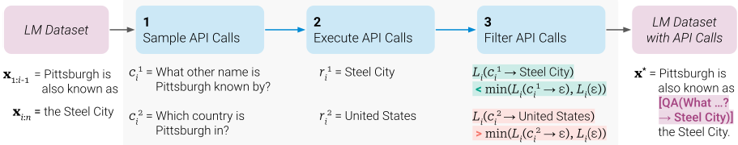
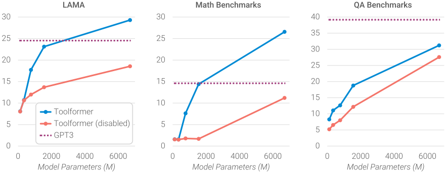

Toolformer：语言模型可以自学使用工具
LLM 在少样本学习上表现出色，却在算术、事实查询、时效信息等基础能力上不如简单的小模型，而已有工具使用方案要么依赖大量人工标注、要么只能用于特定任务。Toolformer 提出自监督方案：为每个 API 仅写少量示例，用 LM 的 in-context learning 在大规模语料中采样潜在 API 调用，执行后以“是否降低后续 token 的加权交叉熵损失”为准则过滤，再用增广数据微调 GPT-J (6.7B)，让模型自主决定调用哪个工具、何时调用、传什么参数、如何把结果融入后续预测；论文接入问答（Atlas）、计算器、Wikipedia 搜索（BM25）、机器翻译（NLLB）、日历五类工具。结果显示其 zero-shot 性能大幅提升，在 LAMA、数学应用题等任务上可超过约 25 倍大的 GPT-3 (175B)，同时语言建模困惑度不退化；工具利用能力约在 775M 参数以上才出现。局限包括无法链式/交互式使用工具、对输入措辞敏感、样本效率低且不考虑调用成本。
LLM 存在无法获取最新信息、易幻觉事实、数学计算不精确、低资源语言理解差、缺乏时间感知等固有局限，仅靠扩大规模难以完全解决；而现有让 LM 使用外部工具的方法要么依赖大量人工标注，要么把工具使用限制在任务特定的 few-shot 设置中，阻碍了工具使用在 LM 中的普及。
三步自监督流水线：(1) 采样——为每个 API 编写含少量人工示例的 prompt，利用 LM 的 in-context learning 按 <API> token 概率选出候选位置并采样 API 调用；(2) 执行——实际运行这些 API（输入输出均为文本序列）；(3) 过滤——仅保留“提供调用输入与结果后能将后续 token 加权交叉熵损失降低至少 τf”的调用，将保留的调用以特殊 token 形式插入原文构造增广数据集 C*，再用标准语言建模目标微调 GPT-J (6.7B)。推理时当模型生成 '→' token 即中断解码、调用对应 API、插入结果后继续解码；解码时允许 <API> 进入 top-k（k=10）以增加调用倾向，并限制每条输入最多一次 API 调用以防循环。
LAMA 三个子集（SQuAD、GoogleRE、T-REx）上分别超过最强同规模基线 11.7、5.2、18.6 分，并明显超过 OPT (66B) 与 GPT-3 (175B)；98.1% 的样例模型自主调用问答工具
数学基准（ASDiv、SVAMP、MAWPS）上允许 API 调用使性能翻倍以上，97.9% 样例调用计算器，明显超过 OPT (66B) 与 GPT-3 (175B)
问答基准（WebQuestions、Natural Questions、TriviaQA）上超过同规模基线（99.3% 样例用 Wikipedia 搜索），但仍落后 GPT-3 (175B)
MLQA 上机器翻译工具在 63.8%–94.9% 样例被调用（Hindi 仅 7.3%），调用一致提升各语言成绩，但整体未稳定超过 vanilla GPT-J
DATESET 上日历工具被 54.8% 样例调用并带来显著提升；TEMPLAMA 上日历仅被调用 0.2%，提升主要来自搜索与问答工具
在 WikiText 与 CCNet 验证集上，用增广数据 C* 微调与用原始数据 C 微调相比困惑度不增加，核心语言建模能力无损失
缩放实验：工具利用能力约在 775M 参数以上才出现，更小模型（124M/355M）使用工具无收益
解码分析：k 从 1 增到 10 使 T-REx/WebQS 的 API 调用率从 40.3%/8.5% 升至 98.1%/100%；k=1 时模型对“何时该调用”有一定校准性，k 增大后校准性丢失
与依赖大量人工监督的既有工具使用模型（Komeili et al.、Thoppilan et al.、Nakano et al.）和依赖任务特定 few-shot prompt 的方法（Gao et al.、Lazaridou et al.、Yao et al.）不同，Toolformer 仅需每个 API 少量示例即可自监督地学会何时及如何用工具，并在 zero-shot 下跨任务通用；与预训练阶段无条件注入检索文本的方法（REALM、RAG、RETRO 等）不同，模型学会自己主动请求“正确的信息”；相比最接近的 TALM（仅针对下游任务微调场景），Toolformer 保持通用语言建模能力、不牺牲原有 LM 能力。
相关度级别：high
命中能力域：3.3 Agent 架构与工具使用
理由：论文是 LLM 工具调用范式的奠基工作，直接命中 3.3“Agent 架构与工具使用”：模型自主决定调用哪个 API、何时调用、传什么参数、如何把结果融入后续生成，这正是团队构建 Agent harness 与工具/技能系统时面对的核心问题。其“以调用是否降低后续 token 损失作为有用性过滤准则”提供了一种不依赖人工标注、自动评估工具调用价值的思路，可用于工具调用数据构造、工具价值评测与单 Agent 执行可靠性分析；论文对解码策略、调用率与校准性的分析也直接可用于评测 Agent 的工具选择行为。检索类工具（BM25 Wikipedia 搜索、Atlas 问答）在文中是作为五类工具中的两类出现，核心贡献仍在工具调用而非 RAG 管线设计，故主匹配 3.3。
建议动作：深入精读并做内部分享
arXiv:2302.04761v1 [cs.CL] 2023年2月9日
Meta AI 研究院 † 庞培法布拉大学（Universitat Pompeu Fabra）
语言模型（Language Model, LM）展现出仅凭少量示例或文本指令就能解决新任务的卓越能力，尤其是在大规模场景下。然而矛盾的是，它们在算术或事实查询等基本功能上却表现不佳，而这些功能恰恰是简单得多、规模小得多的模型所擅长的。在本文中，我们展示了语言模型可以通过简单的 API 自学使用外部工具，从而兼得两者之长。我们提出了 Toolformer，这是一个经过训练的模型，能够决定调用哪些 API、何时调用、传递什么参数，以及如何将结果最好地融入后续的 token 预测之中。这一过程以自监督方式进行，每个 API 只需要少量演示示例即可。我们集成了多种工具，包括计算器、问答（Q&A）系统、搜索引擎、翻译系统和日历。Toolformer 在多种下游任务上实现了显著提升的零样本（zero-shot）性能，往往可与规模大得多的模型相媲美，同时不牺牲其核心语言建模能力。
Large language models achieve impressive zeroand few-shot results on a variety of natural language processing tasks (Brown et al., 2020; Chowdhery et al., 2022, i.a.) and show several emergent capabilities (Wei et al., 2022). However, all of these models have several inherent limitations that can at best be partially addressed by further scaling. These limitations include an inability to access up-to-date information on recent events (Komeili et al., 2022) and the related tendency to hallucinate facts (Maynez et al., 2020; Ji et al., 2022), difficulties in understanding low-resource languages (Lin et al., 2021), a lack of mathematical skills to perform precise calculations (Patel et al., 2021) and an unawareness of the progression of time (Dhingra et al., 2022).
The New England Journal of Medicine is a registered trademark of [QA('Who is the publisher of The New England Journal of Medicine?') → Massachusetts Medical Society] the MMS.
Out of 1400 participants, 400 (or [Calculator(400 / 1400) → 0.29] 29%) passed the test.
The name derives from 'la tortuga', the Spanish word for [MT('tortuga') → turtle] turtle.
The Brown Act is California's law [WikiSearch('Brown Act') → The Ralph M. Brown Act is an act of the California State Legislature that guarantees the public's right to attend and participate in meetings of local legislative bodies.] that requires legislative bodies, like city councils, to hold their meetings open to the public.
Figure 1: Exemplary predictions of Toolformer. The model autonomously decides to call different APIs (from top to bottom: a question answering system, a calculator, a machine translation system, and a Wikipedia search engine) to obtain information that is useful for completing a piece of text.
A simple way to overcome these limitations of today's language models is to give them the ability to use external tools such as search engines, calculators, or calendars. However, existing approaches either rely on large amounts of human annotations (Komeili et al., 2022; Thoppilan et al., 2022) or limit tool use to task-specific settings only (e.g., Gao et al., 2022; Parisi et al., 2022), hindering a more widespread adoption of tool use in LMs. Therefore, we propose Toolformer , a model that learns to use tools in a novel way, which fulfills the following desiderata:

tant not only because of the costs associated with such annotations, but also because what humans find useful may be different from what a model finds useful.
我们实现这些目标的方法基于近期的一个思路，即利用具备上下文学习（in-context learning）能力的大型语言模型（LM）从零开始生成完整的数据集（Schick and Schütze, 2021b; Honovich et al., 2022; Wang et al., 2022）：只需给出少量人工编写的、展示 API 如何使用的示例，我们就让一个 LM 为庞大的语言建模数据集标注潜在的 API 调用。随后，我们使用自监督损失来确定其中哪些 API 调用真正有助于模型预测未来的 token。最后，我们在 LM 自身认为有用的那些 API 调用上对 LM 本身进行微调。如图 1 所示，通过这一简单的方法，LM 能够学会控制多种工具，并自行决定何时使用哪种工具以及如何使用。
由于我们的方法与所使用的数据集无关，我们可以将其应用于最初预训练模型时所用的完全相同的数据集。这确保了模型不会丧失任何通用性和语言建模能力。我们在多种不同的下游任务上开展了实验，结果表明，在学会使用工具之后，基于拥有 6.7B 参数的预训练 GPT-J 模型（Wang and Komatsuzaki, 2021）构建的 Toolformer 取得了强得多的零样本结果，在各种任务上明显优于规模大得多的 GPT-3 模型（Brown et al., 2020）以及其他若干基线。
3 我们将 e(c_i, r_i) 作为前缀提供，而不是将其插入位置 i，这是因为 M 尚未在任何包含 API 调用的样本上完成微调，因此把它插入 x 的中间会打断文本的连贯性，并且与预训练语料库中的模式不一致，从而损害困惑度。
x_{1:i-1}, e(c_i, r_i), x_{i:n}；对于包含多个 API 调用的文本，我们以类似的方式处理。对所有 x ∈ C 执行这一操作，便得到了经 API 调用增强的新数据集 C*。我们使用这一新数据集，并采用标准的语言建模目标来微调 M。至关重要的是，除了插入的 API 调用之外，增强后的数据集 C* 所包含的文本与原始数据集 C 完全相同。因此，在 C* 上微调 M 使模型接触到的内容与在 C 上微调时完全相同。此外，由于 API 调用恰好被插入在那些有助于 M 预测后续 token 的位置上，并且带有恰好有助于预测的那些输入，在 C* 上进行微调使语言模型能够纯粹基于自身的反馈来决定何时以及如何使用哪种工具。
推理 在采用我们的方法对 M 完成微调之后，使用 M 生成文本时，我们执行常规解码，直到 M 生成 '→' token，该 token 表明 M 接下来期望得到某个 API 调用的响应。此时，我们会中断解码过程，调用相应的 API 以获取响应，然后在插入该响应和 </API> token 之后继续解码过程。
我们探索了多种工具，以弥补常规语言模型（LM）的不同缺陷。我们对这些工具施加的唯一约束是：(i) 它们的输入和输出都可以表示为文本序列；(ii) 我们能够获得少量展示其预期用法的示例。具体而言，我们探索了以下五种工具：问答系统、Wikipedia 搜索引擎、计算器、日历和机器翻译系统。表 1 展示了与每种工具相关联的 API 的一些潜在调用及返回字符串示例。下文将简要讨论所有这些工具；更多细节见附录 A。
问答系统 我们的第一个工具是一个基于另一个 LM 的问答系统，它能够回答简单的事实类问题。具体来说，我们使用 Atlas（Izacard et al., 2022），这是一个在 Natural Questions（Kwiatkowski et al., 2019）上微调的检索增强语言模型。
计算器 作为第二个工具，我们使用一个能够执行简单数值计算的计算器；我们仅支持四种基本算术运算。结果始终四舍五入保留两位小数。
Wikipedia 搜索 我们的第三个工具是一个搜索引擎，给定一个搜索词后，它会返回来自 Wikipedia 的简短文本片段。与我们的问答工具相比，这种搜索使模型能够获得关于某个主题的更全面的信息，但需要模型自行提取相关部分。作为搜索引擎，我们使用 BM25 检索器（Robertson et al., 1995; Baeza-Yates et al., 1999），它对来自 KILT（Petroni et al., 2021）的 Wikipedia 数据转储建立了索引。
机器翻译系统 我们的第四个工具是一个基于 LM 的机器翻译系统，它能够将任意语言的短语翻译成英语。更具体地说，我们使用 600M 参数的 NLLB（Costa-jussà et al., 2022）作为多语言机器翻译模型，它支持 200 种语言（包括低资源语言）。源语言通过 fastText 分类器（Joulin et al., 2016）自动检测，而目标语言始终设置为英语。
日历 我们的最后一个工具是一个日历 API，它在被查询时无需任何输入即可返回当前日期。这为需要一定时间感知的预测提供了时间上下文。
我们研究我们的方法是否能使模型在没有任何进一步监督的情况下使用工具，并自行决定何时以及如何调用可用的哪个工具。为了验证这一点，我们选择了多种下游任务，在这些任务中我们假设所考虑的工具中至少有一个是有用的，并在零样本（zero-shot）设置下评估性能（第 4.2 节）。除此之外，我们还确保我们的方法不会损害模型的核心语言建模能力；我们通过查看两个语言建模数据集上的困惑度（perplexity）来验证这一点（第 4.3 节）。最后，我们研究学习使用工具的能力如何受到模型规模的影响（第 4.4 节）。
数据集生成 在我们的所有实验中，我们均使用 CCNet (Wenzek et al., 2020) 的一个子集作为语言建模数据集 C，并使用 GPTJ (Wang and Komatsuzaki, 2021) 作为语言模型 M。为了降低用 API 调用对 C 进行标注的计算成本，我们为部分 API 定义了启发式规则，以得到 C 的一个子集，使得对这些文本进行 API 调用比对一般文本更有可能有所帮助。例如，对于 calculator 工具，我们只考虑至少包含三个数字的文本。所用启发式规则的详细信息见附录 A。为了从 C 得到 C ∗，我们执行第 2 节中描述的所有步骤，并额外过滤掉所有在过滤步骤中所有 API 调用均被剔除的示例。4 对于加权函数，我们使用
| API Name | Example Input | Example Output |
|---|---|---|
| Question Answering | Where was the Knights of Columbus founded? | New Haven, Connecticut |
| Wikipedia Search | Fishing Reel Types | Spin fishing > Spin fishing is distinguished between fly fishing and bait cast fishing by the type of rod and reel used. There are two types of reels used when spin fishing, the open faced reel and the closed faced reel. |
| Calculator | 27 + 4 * 2 | 35 |
| Calendar | ε | Today is Monday, January 30, 2023. |
| Machine Translation | sûreté nucléaire | nuclear safety |
| API Name | Example Input | Example Output |
| API | Number of Examples.τ f = 0 . 5 | Number of Examples.τ f = 1 . 0 | Number of Examples.τ f = 2 . 0 |
|---|---|---|---|
| Question Answering | 51,987 | 18,526 | 5,135 |
| Wikipedia Search | 207,241 | 60,974 | 13,944 |
| Calculator | 3,680 | 994 | 138 |
| Calendar | 61,811 | 20,587 | 3,007 |
| Machine Translation | 3,156 | 1,034 | 229 |
| API | Number of Examples.τ f = 0 . 5 | Number of Examples.τ f = 1 . 0 | Number of Examples.τ f = 2 . 0 |
以确保 API 调用发生在 API 所提供的信息对模型真正有帮助的位置附近。阈值 τ s 和 τ f 针对每个工具单独选取，以确保获得足够数量的示例；详细信息见附录 A。表 2 展示了最终经 API 调用增强的数据集的相关统计信息。
模型微调 我们在 C ∗ 上对 M 进行微调，批量大小为 128，学习率为 1 · 10 - 5，并在训练的前 10% 进行线性预热（linear warmup）。我们微调过程的详细信息见附录 B。
基线模型 在本节的其余部分，我们主要比较以下模型：
4 虽然这种过滤改变了训练示例的分布，但我们假设剩余示例与原始分布足够接近，因而 M 的语言建模能力不会受到影响。该假设在第 4.3 节中得到了实证验证。
对于大多数任务，我们还额外与 OPT (66B) (Zhang et al., 2022) 和 GPT-3 6 (175B) (Brown et al., 2020) 进行比较，这两个模型的规模分别约为我们其他基线模型的 10 倍和 25 倍。
我们在多种下游任务上评估所有模型。在所有情况下，我们均采用带提示的零样本（zero-shot）设置，即模型被要求以自然语言解决每个任务，但我们不提供任何上下文示例（in-context examples）。这与以往关于工具调用（tool use）的研究（例如 Gao et al., 2022; Parisi et al., 2022）形成对比，在那类研究中，模型会获得针对特定数据集的示例，展示如何使用工具来解决某个具体任务。我们选择更具挑战性的零样本设置，是因为我们想考察 Toolformer 恰恰能在那些用户并未预先指定应使用哪些工具、以何种方式来解决特定问题的情形下正常工作。
我们使用标准的贪心解码（greedy decoding），但对 Toolformer 做了一处修改：我们让模型不仅在 <API> 是最可能的词元（token）时发起 API 调用，而是只要它位列可能性最高的 k 个词元之中就发起调用。当 k = 1 时，这对应于常规的贪心解码；我们则使用 k = 10，以提高模型利用其可访问 API 的倾向。同时，我们对每个输入最多只允许一次 API 调用，以确保模型不会陷入不断调用 API 却不产生任何实际输出的循环。这些修改的影响在第 5 节中进行了探讨。
5 这是通过手动将 <API> 词元的概率设置为 0 来实现的。
6 我们使用的是未在任何指令上进行过微调的原始 davinci 变体。
我们在 LAMA 基准测试（benchmark）（Petroni et al., 2019）的 SQuAD、GoogleRE 和 T-REx 子集上评估我们的模型。对于其中每个子集，任务都是补全一个缺少某项事实（例如日期或地点）的简短陈述。由于 LAMA 最初是为评估掩码语言模型而设计的（例如 Devlin et al., 2019），我们过滤掉了掩码词元不是最后一个词元的样本，以便剩余样本能够以从左到右的方式处理。考虑到不同的词元化方式，以及未告知模型只需输出单个词所带来的额外复杂性，我们采用了比精确匹配稍宽松的评估标准，仅检查模型预测的前五个词中是否包含正确的词。由于 LAMA 基于直接取自 Wikipedia 的陈述，我们禁止 Toolformer 使用 Wikipedia Search API，以避免给它带来不公平的优势。
所有模型的结果见表 3。所有未使用工具调用的 GPT-J 模型都取得了相似的性能。至关重要的是，Toolformer 明显优于这些基线模型，分别比最佳基线提升了 11.7、5.2 和 18.6 个百分点。尽管 OPT（66B）和 GPT-3（175B）的规模要大得多，Toolformer 也明显优于这两个模型。之所以能做到这一点，是因为该模型在几乎所有情况下（98.1%）都会自主决定向问答工具询问所需的信息；仅在极少数样本中，它会使用其他工具（0.7%）或完全不使用工具（1.2%）。
我们在 ASDiv（Miao et al., 2020）、SV AMP（Patel et al., 2021）和 MAWPS 基准测试（benchmark）（Koncel-Kedziorski et al., 2016）上测试数学推理能力。我们再次考虑到所有模型均在零样本（zero-shot）设置下进行测试这一事实，因此采用了更为宽松的评估标准：由于所需的输出始终是一个数字，我们只需检查模型预测出的第一个数字即可。7
| Model | SQuAD | Google-RE | T-REx |
|---|---|---|---|
| GPT-J | 17.8 | 4.9 | 31.9 |
| GPT-J + CC | 19.2 | 5.6 | 33.2 |
| Toolformer (disabled) | 22.1 | 6.3 | 34.9 |
| Toolformer | 33.8 | 11.5 | 53.5 |
| OPT (66B) | 21.6 | 2.9 | 30.1 |
| GPT-3 (175B) | 26.8 | 7 | 39.8 |
| Model | SQuAD | Google-RE | T-REx |
| Model | ASDiv | SVAMP | MAWPS |
|---|---|---|---|
| GPT-J | 7.5 | 5.2 | 9.9 |
| GPT-J + CC | 9.6 | 5 | 9.3 |
| Toolformer (disabled) | 14.8 | 6.3 | 15 |
| Toolformer | 40.4 | 29.4 | 44 |
| OPT (66B) | 6 | 4.9 | 7.9 |
| GPT-3 (175B) | 14 | 10 | 19.8 |
| Model | ASDiv | SVAMP | MAWPS |
表 4 给出了所有基准测试的结果。GPT-J 与 GPT-J + CC 的表现大致相当，而 Toolformer 即使在禁用 API 调用的情况下也取得了更强的结果。我们推测，这是因为该模型在大量 API 调用及其结果的示例上进行了微调，从而提升了其自身的数学能力。尽管如此，允许模型进行 API 调用使所有任务的性能提升了一倍以上，并且明显优于规模大得多的 OPT 和 GPT-3 模型。这是因为在所有基准测试中，对于全部样本中的 97.9%，模型都会决定向计算器工具寻求帮助。
我们考察了 Web Questions（Berant et al., 2013）、Natural Questions（Kwiatkowski et al., 2019）和 TriviaQA（Joshi et al., 2017）这三个问答数据集，它们也是 Brown et al.（2020）所考虑的三个问答数据集。在评估时，我们检查模型预测的前 20 个词中是否包含正确答案，而不要求完全匹配。对于 Toolformer，我们禁用了问答工具，因为这会使任务求解变得轻而易举，尤其是考虑到其底层的 QA 系统曾在 Natural Questions 上进行过微调。
7 对此的一个例外是，如果模型的预测中包含一个等式（例如，"The correct answer is 5+3=8"），在这种情况下，我们将 "=" 符号之后的第一个数字视为其预测。
| Model | WebQS | NQ | TriviaQA |
|---|---|---|---|
| GPT-J | 18.5 | 12.8 | 43.9 |
| GPT-J + CC | 18.4 | 12.2 | 45.6 |
| Toolformer (disabled) | 18.9 | 12.6 | 46.7 |
| Toolformer | 26.3 | 17.7 | 48.8 |
| OPT (66B) | 18.6 | 11.4 | 45.7 |
| GPT-3 (175B) | 29 | 22.6 | 65.9 |
| Model | WebQS | NQ | TriviaQA |
结果如表 5 所示。Toolformer 再次明显优于所有基于 GPT-J 的其他模型，这一次主要依靠 Wikipedia 搜索 API（99.3%）来查找相关信息。然而，Toolformer 仍然落后于规模大得多的 GPT-3（175B）模型。这可能是由于两方面的原因：一是我们的搜索引擎较为简单（在许多情况下，它返回的结果显然与给定查询并不匹配），二是 Toolformer 无法与其进行交互，例如在结果没有帮助时重新表述查询，或浏览多个排名靠前的结果。我们认为，添加这一功能是未来工作中一个令人期待的方向。
我们在多语言问答基准测试（benchmark）MLQA（Lewis et al., 2019）上评估 Toolformer 及所有基线模型。每个问题的上下文段落均以英文提供，而问题本身可以是阿拉伯语、德语、西班牙语、印地语、越南语或简体中文。为了完成该任务，模型需要能够同时理解段落和问题，因此将问题翻译成英文可能会带来帮助。我们的评估指标是：模型生成的内容（截取不超过 10 个词）包含正确答案的次数所占的百分比。
结果如表 6 所示。使用 API 调用持续提升了 Toolformer 在所有语言上的性能，这表明它已经学会利用机器翻译工具。根据语言的不同，该工具在所有样本中的使用比例介于 63.8% 到 94.9% 之间；唯一的例外是印地语，机器翻译工具仅在 7.3% 的情况下被使用。然而，Toolformer 并未始终优于原始的 GPT-J。这主要是因为对于某些语言而言，在 CCNet 上进行微调会导致性能下降；这可能是由于与 GPT-J 原始预训练数据相比存在分布偏移。
| Model | Es | De | Hi | Vi | Zh | Ar |
|---|---|---|---|---|---|---|
| GPT-J | 15.2 | 16.5 | 1.3 | 8.2 | 18.2 | 8.2 |
| GPT-J + CC | 15.7 | 14.9 | 0.5 | 8.3 | 13.7 | 4.6 |
| Toolformer (disabled) | 19.8 | 11.9 | 1.2 | 10.1 | 15 | 3.1 |
| Toolformer | 20.6 | 13.5 | 1.4 | 10.6 | 16.8 | 3.7 |
| OPT (66B) | 0.3 | 0.1 | 1.1 | 0.2 | 0.7 | 0.1 |
| GPT-3 (175B) | 3.4 | 1.1 | 0.1 | 1.7 | 17.7 | 0.1 |
| GPT-J (All En) | 24.3 | 27 | 23.9 | 23.3 | 23.1 | 23.6 |
| GPT-3 (All En) | 24.7 | 27.2 | 26.1 | 24.9 | 23.6 | 24 |
| Model | Es | De | Hi | Vi | Zh | Ar |
OPT 和 GPT-3 在所有语言上的表现都出人意料地弱，主要原因是尽管被指示用英文作答，它们却未能做到这一点。GPT-J 之所以没有出现这一问题，一个潜在的原因是它训练时所用的多语言数据比 OPT 和 GPT-3 都多，其中包括 EuroParl 语料库（Koehn, 2005; Gao et al., 2020）。作为上限参考，我们还在 MLQA 的一个变体上评估了 GPT-J 和 GPT-3，在该变体中上下文和问题均以英文提供。在这一设置下，GPT-3 的表现优于所有其他模型，这支持了我们的假设：它在 MLQA 上表现欠佳是由该任务的多语言特性所致。
为了考察日历 API 的实用性，我们在 TEMPLAMA（Dhingra et al., 2022）和一个我们称之为 DATESET 的新数据集上评估了所有模型。TEMPLAMA 是一个基于 Wikidata 构建的数据集，其中包含关于随时间变化的事实的完形填空式查询（例如，"Cristiano Ronaldo 效力于 ___"）以及 2010 年至 2020 年间各年份对应的正确答案。DATESET 在附录 D 中有描述，它同样通过一系列模板生成，但使用随机日期/时长（例如，"30 天前是星期几？"）的组合来填充。关键在于，回答这些问题必须知道当前日期。
| Model | TEMPLAMA | DATESET |
|---|---|---|
| GPT-J | 13.7 | 3.9 |
| GPT-J + CC | 12.9 | 2.9 |
| Toolformer (disabled) | 12.7 | 5.9 |
| Toolformer | 16.3 | 27.3 |
| OPT (66B) | 14.5 | 1.3 |
| GPT-3 (175B) | 15.5 | 0.8 |
| Model | TEMPLAMA | DATESET |
对于这两个任务，我们采用与原始 LAMA 数据集相同的评估方法。
表 7 所示的结果表明，Toolformer 在 TEMPLAMA 和 DATESET 上均优于所有基线模型。然而，更细致的检查显示，TEMPLAMA 上的提升并不能归因于日历工具——该工具仅在 0.2% 的样本中被使用——而主要归因于 Toolformer 调用最频繁的 Wikipedia 搜索工具和问答工具。这是合理的，因为 TEMPLAMA 中的命名实体往往非常具体且罕见，即使确切知道日期也帮助不大。针对该数据集的最佳行动方案——先查询日历 API 以获取当前日期，再用该日期查询问答系统——不仅被我们“每个样本最多进行一次 API 调用”的限制所禁止，而且对 Toolformer 来说也难以学到，因为它训练数据中的所有 API 调用都是独立采样的。
另一方面，对于 DATESET，Toolformer 相比其他模型的显著提升则可以完全归功于日历工具，它在 54.8% 的样本中使用了该工具。
除了验证在各种下游任务上的性能提升之外，我们还希望确保 Toolformer 的语言建模性能不会因我们加入 API 调用的微调而下降。为此，我们在两个语言建模数据集上对模型进行评估：WikiText（Merity et al., 2017）以及从 CCNet（Wenzek et al., 2020）中随机抽取的 10,000 篇文档组成的、未在训练中使用的子集。各模型的困惑度如表 8 所示。正如预期的那样，在 CCNet 上进行微调会在另一个 CCNet 子集上带来轻微的性能提升，但会使 WikiText 上的性能略有下降，这大概是因为 GPT-J 的原始预训练数据与我们随机抽取的 CCNet 子集相比更接近 WikiText。然而，最重要的是，当在推理时禁用 API 调用时，在 C ∗（我们用 API 调用进行标注的数据集）上训练与在 C 上训练相比，并不会导致困惑度上升。8
| Model | WikiText | CCNet |
|---|---|---|
| GPT-J | 9.9 | 10.6 |
| GPT-J + CC | 10.3 | 10.5 |
| Toolformer (disabled) | 10.3 | 10.5 |
| Model | WikiText | CCNet |
我们研究了当我们改变语言模型（LM）的规模时，向外部工具寻求帮助的能力会如何影响性能。为此，我们不仅将我们的方法应用于 GPT-J，还应用于 GPT-2 家族（Radford et al., 2019）中的四个更小的模型，其参数量分别为 124M、355M、775M 和 1.6B。我们在这样做时仅使用三个工具的一个子集：问答系统、计算器和 Wikipedia 搜索引擎。除此之外，我们遵循第 4.1 节中描述的实验设置。
图 4 表明，利用所提供工具的能力大约在 775M 参数时才开始显现：更小的模型无论是否使用工具都取得了相似的性能。一个例外是主要用于 QA 基准测试的 Wikipedia 搜索引擎；我们推测这是因为该 API 相对容易使用。虽然随着规模的增大，模型在不使用 API 调用的情况下解决任务的能力会变得更强，但它们充分利用所提供 API 的能力也在同时提升。因此，即使对于我们最大的模型，使用与不使用 API 调用进行预测之间仍然存在很大的差距。
解码策略 我们研究了第 4.2 节中引入的修改后的解码策略的效果：不再总是生成概率最高的词元，而是当 <API> 词元位于概率最高的 k 个词元之中时生成它。表 9 展示了不同 k 值下模型在 LAMA 的 T-REx 子集以及 WebQS 上的性能。正如预期，增大 k 会使模型对更多样本进行 API 调用——从 k = 1（即常规贪心解码）时的 40.3% 和 8.5% 增加到 k = 10 时的 98.1% 和 100%。对于 T-REx，即使采用贪心解码，性能也已有明显提升；而在 WebQS 上，只有在我们略微增大 k 之后，模型才开始进行大量的 API 调用。有趣的是，当 k = 1 时，模型在某种程度上是经过校准的：对于那些在不进行 API 调用的情况下表现会特别差的样本，它会决定调用 API。这一点可以从如下事实看出：在模型决定不进行 API 调用的那些样本上，其性能（44.3 和 19.9）高于完全不进行 API 调用时的平均性能（34.9 和 18.9）。然而，当 k 取更大的值时，这种校准便不复存在。
8 我们没有评估在启用 API 调用的情况下 Toolformer 的困惑度，因为计算在给定 x 1 , . . . , x t - 1 的条件下词元 x t 的概率 p M ( x t | x 1 , . . . , x t - 1 ) 需要对模型在位置 t 可能做出的所有潜在 API 调用进行边缘化，而这在计算上是难以处理的。

数据质量 我们针对不同的 API，对用我们的方法生成的一些 API 调用进行了定性分析。表 10 展示了来自 CCNet 的一些经 API 调用增强的文本示例、作为过滤准则使用的相应分数 L - i - L + i，以及模型所做的 API 调用在给定上下文中直观上是否有用。可以看出，L - i - L + i 的高值通常对应于有用的 API 调用，而低值则对应于那些对预测后续词元没有任何有用信息的 API 调用。但也存在一些例外，例如针对
| k | T-REx.All | T-REx.AC | T-REx.NC | T-REx.% | WebQS.All | WebQS.AC | WebQS.NC | WebQS.% |
|---|---|---|---|---|---|---|---|---|
| 0 | 34.9 | - | 34.9 | 0 | 18.9 | - | 18.9 | 0 |
| 1 | 47.8 | 53.0 | 44.3 | 40.3 | 19.3 | 17.1 | 19.9 | 8.5 |
| 3 | 52.9 | 58.0 | 29 | 82.8 | 26.3 | 26.5 | 6.6 | 99.3 |
| 10 | 53.5 | 54.0 | 22.5 | 98.1 | 26.3 | 26.4 | - | 100 |
| k | T-REx.All | T-REx.AC | T-REx.NC | T-REx.% | WebQS.All | WebQS.AC | WebQS.NC | WebQS.% |
第四个示例中 'Fast train success' 的 API 调用，它没有提供任何相关信息，却仍然降低了困惑度。然而，未被过滤掉的 API 调用中存在一定量的噪声实际上可能是有益的，因为它会迫使在 C ∗ 上微调的模型不至于总是盲目遵循其每次调用的结果。
语言模型预训练（Language Model Pretraining） 有多种方法在预训练期间通过某种形式的额外文本信息来增强语言模型，包括各种形式的元数据（Keskar et al., 2019）、HTML 标签（Aghajanyan et al., 2021）、Wikipedia 标记（Schick et al., 2022），或从信息检索系统获取的相关文本（Guu et al., 2020; Borgeaud et al., 2021; Izacard et al., 2022）。对于所有这些方法，额外信息总是会被提供，而无论其是否有帮助。相比之下，Toolformer 学会自行显式地请求正确的信息。
| Example | L - i - L + i | Useful |
|---|---|---|
| The Flodden Window (a war memorial dedicated to The Middleton Archers), in the Grade I-listed Church of St Leonard in Middleton is said to be the oldest war memorial in the United King- dom. <API> WikiSearch(War memorial Flodden) → Battle of Flodden > Commemoration > The stained-glass Flodden Window in Middleton Parish Church [. . . ] was constructed by Sir Richard Assheton in memory of the Battle of Flodden and the archers from Middleton who fought in it. </API> Sir Richard Assheton of Middleton (who built St Leonard) was granted knighthood [. . . ] | 5.49 | 3 |
| Note: The WLwill be open on Friday, <API> Calendar() → Today is Thursday, March 9, 2017. </API> March 10, and Sunday, March 19 for regular hours. | 2.11 | 3 |
| The Nile has an approximate length of <API> QA(What is the approximate length of the Nile?) → 6,853 km </API> 6,853 kilometers, the White Nile being its main source. | 2.08 | 3 |
| If Venus had an atmosphere similar to Earth's then you would expect Venus' mean temperature to be 499 K (1.74 x 287) rather than 735 K which is <API> Calculator(735 / 499) → 1.47 </API> 1.47 (735 / 499) times hotter than it should be. | 1.59 | 3 |
| You are here: Home / Featured / Catch this fast train to success! <API> WikiSearch(Fast train success) → Fast Train > It also peaked at #23 on the Canadian CHUM singles chart, on June 26, 1971. The success of this single established Myles Goodwyn as the band's main songwriter, and made it possible for April Wine to record a second album. </API> Don't wait weeks and [ . . . ] | 0.92 | 7 |
| Os Melhores Escolas em Jersey 2020 <API> MT(Os Melhores Escolas em Jersey) → The Best Schools in Jersey </API> On this page you can search for Universities, Colleges and Business schools in Jersey | 0.70 | 3 |
| Enjoy these pictures from the <API> Calendar() → Today is Friday, April 19, 2013. </API> Easter Egg Hunt. | 0.33 | 3 |
| 85 patients (23%) were hospitalised alive and admitted to a hospital ward. Of them, <API> Calcula- tor(85 / 23) → 3.70 </API> 65% had a cardiac aetiology [ . . . ] | - 0.02 | 7 |
| But hey, after the <API> Calendar() → Today is Saturday, June 25, 2011. </API> Disneyland fiasco with the fire drill, I think it's safe to say Chewey won't let anyone die in a fire. | - 0.41 | 7 |
| The last time I was with <API> QA(Who was last time I was with?) → The Last Time </API> him I asked what he likes about me and he said he would tell me one day. | - 1.23 | 7 |
| Example | L - i - L + i | Useful |
工具调用（Tool Use） 若干方法旨在使语言模型（LM）具备使用外部工具的能力，例如搜索引擎（Komeili et al., 2022; Thoppilan et al., 2022; Lazaridou et al., 2022; Shuster et al., 2022; Yao et al., 2022）、网页浏览器（Nakano et al., 2021）、计算器（Cobbe et al., 2021; Thoppilan et al., 2022）、翻译系统（Thoppilan et al., 2022）以及 Python 解释器（Gao et al., 2022）。这些模型学习使用工具的方式大致可分为两类：要么依赖大量的人工监督（Komeili et al., 2022; Nakano et al., 2021; Thoppilan et al., 2022），要么通过在针对特定任务定制的少样本（few-shot）设置中对语言模型进行提示来工作，其中事先已知需要使用哪些工具（Gao et al., 2022; Lazaridou et al., 2022; Yao et al., 2022）。相比之下，Toolformer 的自监督特性使其能够学习如何使用工具以及何时使用工具，而无需借助展示任务特定工具使用示例的特定提示。与我们的工作或许最为相关的是 TALM（Parisi et al., 2022），该方法使用类似的自监督目标来教模型使用计算器和搜索引擎，但仅在针对下游任务对模型进行微调的设置中对此进行了探索。
自举（Bootstrapping） 利用自训练和自举技术来改进模型的想法已在多种场景中得到研究，范围涵盖词义消歧（Yarowsky, 1995）、关系抽取（Brin, 1999; Agichtein and Gravano, 2000）、句法分析（McClosky et al., 2006; Reichart and Rappoport, 2007）、序列生成（He et al., 2020）、少样本文本分类（Schick and Schütze, 2021a）与检索（Izacard and Grave, 2021），直至推理（Zelikman et al., 2022）。与这些方法的思路类似，Toolformer 在应用基于困惑度的过滤步骤之后，在其自身的预测上进行训练。
尽管我们的方法使语言模型（LM）能够以自监督的方式学习使用多种工具，但就其当前形式而言，我们的方法所能实现的效果仍存在一些明显的局限。其中一个局限是 Toolformer 无法以链式方式使用工具（即把一个工具的输出作为另一个工具的输入）。这是因为每个工具的 API 调用都是独立生成的；因此，微调数据集中不存在链式工具调用的示例。我们目前的方法也不允许语言模型以交互方式使用工具——尤其是对于搜索引擎这类可能返回数百条不同结果的工具，让语言模型能够浏览这些结果，或以与 Nakano et al. (2021) 类似的方式改进其搜索查询，对某些应用而言可能至关重要。除此之外，我们发现用 Toolformer 训练的模型在决定是否调用 API 时，往往对输入的确切措辞很敏感；考虑到已知语言模型在零样本和少样本设置下都对其所获得的提示（prompt）非常敏感（Jiang et al., 2020; Schick and Schütze, 2021a），这一点或许并不令人意外。视具体工具而定，我们的方法的样本效率也很低；例如，处理超过一百万篇文档，最终只能得到几千个对 calculator API 的有效调用示例。针对这一问题，一个潜在的解决方案是迭代地应用我们的方法，这与相关自举（bootstrapping）方法中的做法类似（Schick and Schütze, 2021a; Izacard and Grave, 2021; Parisi et al., 2022）。最后，在决定是否进行 API 调用时，Toolformer 目前并未考虑调用 API 所带来的、因工具而异的计算成本。
我们提出了 Toolformer，这是一种以自监督方式学习如何通过简单的 API 调用来使用搜索引擎、计算器和翻译系统等不同工具的语言模型。这一过程是通过在大量采样得到的 API 调用上进行微调来实现的，这些 API 调用依据其能否降低后续 token 的困惑度（perplexity）而被过滤。Toolformer 大幅提升了 6.7B 参数 GPT-J 模型的零样本（zero-shot）性能，使其在一系列不同的下游任务上甚至能够超越规模大得多的 GPT-3 模型。
在采样和过滤 API 调用时，默认情况下我们使用 τ_s = 0.05 和 τ_f = 1.0 的取值——也就是说，我们只在 <API> token 的概率至少为 5% 的位置发起 API 调用，并且仅当某个 API 调用能将损失至少降低 1.0 时才将其保留。我们只保留排名前 k = 5 的此类位置，并对一段文本中识别出的每个位置最多采样 m = 5 个 API 调用。由于下文所述的启发式过滤，我们仅在 C 的一个小子集上为计算器和机器翻译系统生成 API 调用；为了弥补这一点，我们对这些工具设置 τ_s = 0.0、k = 20 和 m = 10。由于由此得到的 API 调用集合仍然相对较小，我们额外将 τ_f 设为 0.5。
问答 我们使用 Izacard 等人（2022）的 Atlas 模型，该模型在 Natural Questions（Kwiatkowski 等人，2019）数据集上进行了微调，作为我们的问答系统。在创建 C ∗ 时，我们使用 Atlas-large，从而能够高效地处理数百万个 API 调用；在推理阶段，我们使用更大的 Atlas-xxl 模型。
计算器 我们的计算器基于一个简单的 Python 脚本，仅支持 ' + '、' - '、' ∗ ' 和 ' / ' 这几种运算符。对于语法无效的等式，它不返回任何结果。在采样 API 调用时，我们对 CCNet 的子集应用启发式过滤器，仅处理满足以下条件之一的文档：(i) 在 100 个 token 的窗口内包含至少三个数字，且其中一个数字是对另外两个数字施加某种数学运算所得的结果；(ii) 包含 '='、'equals'、'equal to'、'total of'、'average of' 中的某个序列且其后跟有一个数字；或 (iii) 包含至少三个数字；对于仅满足最后一条标准的文本，我们只保留其中 1% 的随机子集。
日历 在创建我们的数据集 C ∗ 时，我们基于如下假设：此类情形下的日历日期应当是文档创建的日期。我们通过从 URL 中提取日期（如果存在）来近似实现这一点。我们过滤掉无法提取出日期的文本，剩下大约 18% 的文档。
机器翻译 在训练和推理中，我们都使用具有 600M 参数的 NLLB（Costajussà 等人，2022）作为我们的机器翻译（MT）模型。源语言通过 fastText 分类器（Joulin 等人，2016）自动检测，而目标语言始终设置为英语。由于 CCNet 数据集的大部分内容是英语，我们在生成 API 调用之前先过滤掉仅包含英语文本的部分。更具体地说，我们只保留这样的段落：其中包含非英语的文本块，且该文本块的前后均为英语文本。我们使用的文本块大小为 10 个 token。为了判断中间的文本块是否为英语以外的语言，我们再次使用 fastText 分类器，并要求置信度大于 0.8。我们还过滤掉任何仅包含数字或特殊符号的文本块。这一过滤机制使我们能够更高效地生成数据，将 API 调用的生成集中在 MT 工具可能有所帮助的位置。在生成 MT API 调用之后，我们还会从训练集中移除那些 MT 工具的输入出现在 API 调用之后但未出现在其之前的样本。虽然在数据生成期间模型可以向前查看来生成 API 调用，但在推理时无法做到这一点，因此我们希望劝阻模型在这类情况下调用 API。
你的任务是补全给定的文本。你可以使用 Wikipedia Search API 来查找信息。你可以通过书写 "[WikiSearch(term)]" 来做到这一点，其中 "term" 是你想要查找的搜索词。以下是一些 API 调用的示例：
输入：加纳国旗上的颜色具有以下含义：红色代表烈士的鲜血，绿色代表，而金色代表矿产财富。输出：加纳国旗上的颜色具有以下含义：红色代表 [WikiSearch("Ghana flag red meaning")] 烈士的鲜血，绿色代表，而金色代表矿产财富。
其中森林、森林，
输入：但在纳米材料的生产过程中存在哪些风险？某些纳米材料可能引起各种类型的肺损伤。输出：但在纳米材料的生产过程中存在哪些风险？[WikiSearch("nanomaterial production risks")] 某些纳米材料可能引起各种类型的肺损伤。
输入：二甲双胍（Metformin）是 2 型糖尿病和肥胖症患者的一线药物。输出：二甲双胍（Metformin）是 [WikiSearch("Metformin first-line drug")] 2 型糖尿病和肥胖症患者的一线药物。
你的任务是在一段文本中加入对 Calendar API 的调用。这些 API 调用应当帮助你获取完成该文本所需的信息。你可以通过书写 "[Calendar()]" 来调用 API。以下是一些 API 调用的示例：
输入：今天是今年的第一个星期五。输出：今天是今年的第一个 [Calendar()] 星期五。
输入：美国总统是乔·拜登。输出：美国总统是 [Calendar()] 乔·拜登。输入：今天是一周中的星期三。输出：今天是一周中的 [Calendar()] 星期三。输入：从现在到圣诞节还有 30 天。输出：从现在到圣诞节还有 [Calendar()] 30 天。输入：这家店周末从不营业，所以今天它关门了。输出：这家店周末从不营业，所以今天 [Calendar()] 它关门了。
我们对每个 API 最多使用 25k 个样本。最大序列长度为 1,024。有效批大小为 128。所有模型均使用 DeepSpeed 的 ZeRO-3（Rasley et al., 2020）进行训练。我们使用 8 块 NVIDIA A100 40GB GPU，并采用 BF16 精度。训练最多进行 2k 步，在此期间，我们每 500 步在一个来自 CCNet、包含 1,000 个样本的小型开发集上评估困惑度（PPL）。我们选择表现最好的检查点。
对于 LAMA 和 TEMPLAMA，给定输入文本 x，我们使用以下提示：请补全以下文本，使其在事实上正确：x。
对于所有数学基准测试（benchmark），给定上下文 x 和问题 q，我们的提示为：x q The answer is .
对于所有问答数据集，包括 DATESET，我们只是简单地在问题前加上前缀 Answer the following question: 。如果问题本身没有以问号结尾，我们会在其末尾附加一个问号。
对于 MLQA，给定上下文 x 和问题 q，我们的提示为：你的任务是根据以下段落回答一个问题：x 现在用英语回答以下问题：q。
| Template | Size |
|---|---|
| How many days {ago was, are there until} { past_date , future_date} ? | 400 |
| What {day of the week, day of the month, month, year} was it ( current_date - past_date ) {days, weeks, months, years} ago? | 800 |
| What {day of the week, day of the month, month, year} will it be in ( future_date - current_date ) days? | 800 |
| What day of the week {is, was} it on { past_date , future_date} ? | 400 |
| What {day of the week, day of the month, month, year} {is, was} it {the day before yesterday, yes- terday, today, tomorrow, the day after tomorrow}? | 4,000 |
| What {day of the week, day of the month, month} {is, was} holiday this year? | 1,800 |
| How many {days, weeks, months, years} {ago was, are there until} holiday this year? | 1,200 |
| Total | 9,400 |
| Template | Size |
DATESET is created by first randomly selecting 500 'current dates'. For each current date, another relatively past/future date is randomly selected within a four-year range, and the two dates are used to fill the query templates in Table 11. An example of one such query using the first template would be, 'How many days ago was August 14, 2020?' If called, the Calendar tool would return the presumed current date (e.g., 'Today is Sunday, November 20, 2020').
1 条证据未在原文中核对到